4.20 Sensitivity and identification analysis
Dynare provides an interface to the global sensitivity analysis (GSA)
toolbox (developed by the Joint Research Center (JRC) of the European
Commission), which is now part of the official Dynare distribution. The
GSA toolbox can be used to answer the following questions:
- What is the domain of structural coefficients assuring the stability and determinacy
of a DSGE model?
- Which parameters mostly drive the fit of, e.g., GDP and which the fit of inflation?
Is there any conflict between the optimal fit of one observed series versus another?
- How to represent in a direct, albeit approximated, form the relationship between
structural parameters and the reduced form of a rational expectations model?
The discussion of the methodologies and their application is described in
Ratto (2008).
With respect to the previous version of the toolbox, in order to work
properly, the GSA toolbox no longer requires that the Dynare
estimation environment is set up.
4.20.1 Performing sensitivity analysis
- Command: dynare_sensitivity ;
- Command: dynare_sensitivity (OPTIONS…);
-
Description
This command triggers sensitivity analysis on a DSGE model.
Options
Sampling Options
Nsam = INTEGERSize of the Monte-Carlo sample. Default: 2048
ilptau = INTEGERIf equal to 1, use 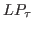 quasi-Monte-Carlo.
If equal to 0, use LHS Monte-Carlo. Default: 1
pprior = INTEGERIf equal to 1, sample from the prior distributions.
If equal to 0, sample from the multivariate normal
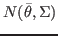,
where  is the posterior mode and 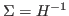, 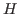
is the Hessian at the mode. Default:
is the posterior mode and 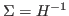, 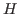
is the Hessian at the mode. Default: 1
prior_range = INTEGERIf equal to 1, sample uniformly from prior ranges.
If equal to 0, sample from prior distributions. Default: 1
morris = INTEGERIf equal to 0, ANOVA mapping (Type I error)
If equal to 1, Screening analysis (Type II error)
If equal to 2, Analytic derivatives (similar to Type II error, only valid when
identification=1).Default: 1 when identification=1, 0 otherwise
morris_nliv = INTEGERNumber of levels in Morris design. Default: 6
morris_ntra = INTEGERNumber trajectories in Morris design. Default: 20
ppost = INTEGERIf equal to 1, use Metropolis posterior sample.
If equal to 0, do not use Metropolis posterior sample. NB: This
overrides any other sampling option. Default: 0
neighborhood_width = DOUBLEWhen pprior=0 and ppost=0, allows for the sampling of
parameters around the value specified in the mode_file, in the range
xparam1
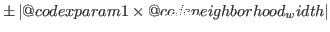. Default: 0
Stability Mapping Options
stab = INTEGERIf equal to 1, perform stability mapping.
If equal to 0, do not perform stability mapping. Default: 1
load_stab = INTEGERIf equal to 1, load a previously created sample.
If equal to 0, generate a new sample. Default: 0
alpha2_stab = DOUBLECritical value for correlations in filtered samples:
plot couples of parmaters with
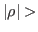 alpha2_stab.
Default: 0
pvalue_ks = DOUBLEThe threshold 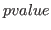 for significant Kolmogorov-Smirnov test (i.e. plot parameters with
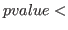 pvalue_ks). Default: 0.001
pvalue_corr = DOUBLEThe threshold for significant correlation in filtered samples
(i.e. plot bivariate samples when pvalue_corr). Default: 1e-5
Reduced Form Mapping Options
redform = INTEGERIf equal to 1, prepare Monte-Carlo sample of reduced form matrices.
If equal to 0, do not prepare Monte-Carlo sample of reduced form matrices. Default: 0
load_redform = INTEGERIf equal to 1, load previously estimated mapping.
If equal to 0, estimate the mapping of the reduced form model. Default: 0
logtrans_redform = INTEGERIf equal to 1, use log-transformed entries.
If equal to 0, use raw entries. Default: 0
threshold_redform = [DOUBLE DOUBLE]The range over which the filtered Monte-Carlo entries of the reduced form coefficients
should be analyzed. The first number is the lower bound and the second is the upper bound.
An empty vector indicates that these entries will not be filtered. Default: empty
ksstat_redform = DOUBLECritical value for Smirnov statistics 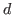 when reduced form entries
are filtered. Default: 0.001
alpha2_redform = DOUBLECritical value for correlations when reduced form entries
are filtered. Default: 1e-5
namendo = (VARIABLE_NAME…)List of endogenous variables. ‘:’ indicates all endogenous variables.
Default: empty
namlagendo = (VARIABLE_NAME…)List of lagged endogenous variables. ‘:’ indicates all lagged endogenous variables.
Analyze entries [namendonamlagendo] Default: empty
namexo = (VARIABLE_NAME…)List of exogenous variables. ‘:’ indicates all exogenous variables.
Analyze entries [namendonamexo]. Default: empty
RMSE Options
rmse = INTEGERIf equal to 1, perform RMSE analysis.
If equal to 0, do not perform RMSE analysis. Default: 0
load_rmse = INTEGERIf equal to 1, load previous RMSE analysis.
If equal to 0, make a new RMSE analysis. Default: 0
lik_only = INTEGERIf equal to 1, compute only likelihood and posterior.
If equal to 0, compute RMSE’s for all observed series. Default: 0
var_rmse = (VARIABLE_NAME…)List of observed series to be considered. ‘:’ indicates all observed
variables. Default: varobs
pfilt_rmse = DOUBLEFiltering threshold for RMSE’s. Default: 0.1
istart_rmse = INTEGERValue at which to start computing RMSE’s (use 2 to avoid big intitial
error). Default: presample+1
alpha_rmse = DOUBLECritical value for Smirnov statistics : plot parameters with
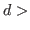 alpha_rmse. Default: 0.001
alpha2_rmse = DOUBLECritical value for correlation : plot couples of parmaters with
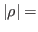 alpha2_rmse. Default: 1e-5
datafile = FILENAMESee datafile.
nobs = INTEGERnobs = [INTEGER1:INTEGER2]See nobs.
first_obs = INTEGERSee first_obs.
prefilter = INTEGERSee prefilter.
presample = INTEGERSee presample.
nographSee nograph.
nodisplaySee nodisplay.
graph_format = FORMATgraph_format = ( FORMAT, FORMAT… )See graph_format.
conf_sig = DOUBLESee conf_sig.
loglinearSee loglinear.
mode_file = FILENAMESee mode_file.
kalman_algo = INTEGERSee kalman_algo.
Identification Analysis Options
identification = INTEGERIf equal to 1, performs identification anlysis (forcing redform=0 and morris=1)
If equal to 0, no identification analysis. Default: 0
morris = INTEGERSee morris.
morris_nliv = INTEGERSee morris_nliv.
morris_ntra = INTEGERSee morris_ntra.
load_ident_files = INTEGERLoads previously performed identification analysis. Default: 0
useautocorr = INTEGERUse autocorrelation matrices in place of autocovariance matrices in moments
for identification analysis. Default: 0
ar = INTEGERMaximum number of lags for moments in identification analysis. Default: 1
diffuse_filter = INTEGERSee diffuse_filter.
4.20.2 IRF/Moment calibration
The irf_calibration and moment_calibration blocks allow imposing implicit “endogenous” priors
about IRFs and moments on the model. The way it works internally is that
any parameter draw that is inconsistent with the “calibration” provided in these blocks is discarded, i.e. assigned a prior density of  .
In the context of
.
In the context of dynare_sensitivity, these restrictions allow tracing out which parameters are driving the model to
satisfy or violate the given restrictions.
IRF and moment calibration can be defined in irf_calibration and moment_calibration blocks:
- Block: irf_calibration ;
- Block: irf_calibration (OPTIONS…);
-
Description
This block allows defining IRF calibration criteria and is terminated by end;.
To set IRF sign restrictions, the following syntax is used
VARIABLE_NAME(INTEGER),EXOGENOUS_NAME, -;
VARIABLE_NAME(INTEGER:INTEGER),EXOGENOUS_NAME, +;
To set IRF restrictions with specific intervals, the following syntax is used
VARIABLE_NAME(INTEGER),EXOGENOUS_NAME, [DOUBLE DOUBLE];
VARIABLE_NAME(INTEGER:INTEGER),EXOGENOUS_NAME, [DOUBLE DOUBLE];
When (INTEGER:INTEGER) is used, the restriction is considered to be fulfilled by a logical OR.
A list of restrictions must always be fulfilled with logical AND.
Options
relative_irfSee relative_irf.
Example
irf_calibration;
y(1:4), e_ys, [ -50 50]; //[first year response with logical OR]
@#for ilag in 21:40
R_obs(@{ilag}), e_ys, [0 6]; //[response from 5th to 10th years with logical AND]
@#endfor
end;
- Block: moment_calibration ;
- Block: moment_calibration (OPTIONS…);
-
Description
This block allows defining moment calibration criteria. This block is terminated by end;, and contains lines of the
form:
VARIABLE_NAME1,VARIABLE_NAME2(+/-INTEGER), [DOUBLE DOUBLE];
VARIABLE_NAME1,VARIABLE_NAME2(+/-INTEGER), +/-;
VARIABLE_NAME1,VARIABLE_NAME2(+/-(INTEGER:INTEGER)), [DOUBLE DOUBLE];
VARIABLE_NAME1,VARIABLE_NAME2((-INTEGER:+INTEGER)), [DOUBLE DOUBLE];
When (INTEGER:INTEGER) is used, the restriction is considered to be fulfilled by a logical OR.
A list of restrictions must always be fulfilled with logical AND.
Example
moment_calibration;
y_obs,y_obs, [0.5 1.5]; //[unconditional variance]
y_obs,y_obs(-(1:4)), +; //[sign restriction for first year acf with logical OR]
@#for ilag in -2:2
y_obs,R_obs(@{ilag}), -; //[-2:2 ccf with logical AND]
@#endfor
@#for ilag in -4:4
y_obs,pie_obs(@{ilag}), -; //[-4_4 ccf with logical AND]
@#endfor
end;
4.20.3 Performing identification analysis
- Command: identification ;
- Command: identification (OPTIONS…);
-
Description
This command triggers identification analysis.
Options
ar = INTEGERNumber of lags of computed autocorrelations (theoretical moments). Default: 1
useautocorr = INTEGERIf equal to 1, compute derivatives of autocorrelation. If equal
to 0, compute derivatives of autocovariances. Default: 0
load_ident_files = INTEGERIf equal to 1, allow Dynare to load previously
computed analyzes. Default: 0
prior_mc = INTEGERSize of Monte-Carlo sample. Default: 1
prior_range = INTEGERTriggers uniform sample within the range implied by the prior specifications (when
prior_mc>1). Default: 0
advanced = INTEGERShows a more detailed analysis, comprised of an analysis for the linearized rational
expectation model as well as the associated reduced form solution. Further performs a brute
force search of the groups of parameters best reproducing the behavior of each single parameter.
The maximum dimension of the group searched is triggered by max_dim_cova_group. Default: 0
max_dim_cova_group = INTEGERIn the brute force search (performed when advanced=1) this option sets the maximum dimension of groups
of parameters that best reproduce the behavior of each single model parameter. Default: 2
periods = INTEGERWhen the analytic Hessian is not available (i.e. with missing values or diffuse
Kalman filter or univariate Kalman filter), this triggers the length of stochastic simulation
to compute Simulated Moments Uncertainty. Default: 300
replic = INTEGERWhen the analytic Hessian is not available, this triggers the number of replicas
to compute Simulated Moments Uncertainty. Default: 100
gsa_sample_file = INTEGERIf equal to 0, do not use sample file.
If equal to 1, triggers gsa prior sample.
If equal to 2, triggers gsa Monte-Carlo sample (i.e. loads a sample corresponding to
pprior=0 and ppost=0 in the dynare_sensitivity options). Default: 0
gsa_sample_file = FILENAMEUses the provided path to a specific user defined sample file. Default: 0
parameter_set = calibration | prior_mode | prior_mean | posterior_mode | posterior_mean | posterior_medianSpecify the parameter set to use. Default: prior_mean
lik_init = INTEGERSee lik_init.
kalman_algo = INTEGERSee kalman_algo.
nographSee nograph.
nodisplaySee nodisplay.
graph_format = FORMATgraph_format = ( FORMAT, FORMAT… )See graph_format.
4.20.4 Types of analysis and output files
The sensitivity analysis toolbox includes several types of analyses.
Sensitivity analysis results are saved locally in <mod_file>/gsa,
where <mod_file>.mod is the name of the DYNARE model file.
4.20.4.1 Sampling
The following binary files are produced:
-
<mod_file>_prior.mat: this file stores information about the analyses
performed sampling from the prior, i.e. pprior=1 and ppost=0;
-
<mod_file>_mc.mat: this file stores information about the analyses performed
sampling from multivariate normal, i.e. pprior=0 and ppost=0;
-
<mod_file>_post.mat: this file stores information about analyses performed
using the Metropolis posterior sample, i.e. ppost=1.
4.20.4.2 Stability Mapping
Figure files produced are of the form <mod_file>_prior_*.fig and store results
for stability mapping from prior Monte-Carlo samples:
-
<mod_file>_prior_stable.fig: plots of the Smirnov test and the correlation analyses
confronting the cdf of the sample fulfilling Blanchard-Kahn conditions (blue color)
with the cdf of the rest of the sample (red color), i.e. either
instability or indeterminacy or the solution could not be found (e.g.
the steady state solution could not be found by the solver);
-
<mod_file>_prior_indeterm.fig: plots of the Smirnov test and the correlation
analyses confronting the cdf of the sample producing indeterminacy (red color)
with the cdf of the rest of the sample (blue color);
-
<mod_file>_prior_unstable.fig: plots of the Smirnov test and the correlation
analyses confronting the cdf of the sample producing explosive roots (red color)
with the cdf of the rest of the sample (blue color);
-
<mod_file>_prior_wrong.fig: plots of the Smirnov test and the correlation
analyses confronting the cdf of the sample where the solution could not be found (e.g.
the steady state solution could not be found by the solver - red color)
with the cdf of the rest of the sample (blue color);
-
<mod_file>_prior_calib.fig: plots of the Smirnov test and the correlation
analyses splitting the sample fulfilling Blanchard-Kahn conditions,
by confronting the cdf of the sample where IRF/moment restrictions are matched (blue color)
with the cdf where IRF/moment restrictions are NOT matched (red color);
Similar conventions apply for <mod_file>_mc_*.fig files, obtained when
samples from multivariate normal are used.
4.20.4.3 IRF/Moment restrictions
The following binary files are produced:
-
<mod_file>_prior_restrictions.mat: this file stores information about the IRF/moment restriction analysis
performed sampling from the prior ranges, i.e. pprior=1 and ppost=0;
-
<mod_file>_mc_restrictions.mat: this file stores information about the IRF/moment restriction analysis performed
sampling from multivariate normal, i.e. pprior=0 and ppost=0;
-
<mod_file>_post_restrictions.mat: this file stores information about IRF/moment restriction analysis performed
using the Metropolis posterior sample, i.e. ppost=1.
Figure files produced are of the form <mod_file>_prior_irf_calib_*.fig and <mod_file>_prior_moment_calib_*.fig and store results
for mapping restrictions from prior Monte-Carlo samples:
-
<mod_file>_prior_irf_calib_<ENDO_NAME>_vs_<EXO_NAME>_<PERIOD>.fig: plots of the Smirnov test and the correlation
analyses splitting the sample fulfilling Blanchard-Kahn conditions,
by confronting the cdf of the sample where the individual IRF restriction
<ENDO_NAME> vs. <EXO_NAME> at period(s) <PERIOD> is matched (blue color)
with the cdf where the IRF restriction is NOT matched (red color)
-
<mod_file>_prior_irf_calib_<ENDO_NAME>_vs_<EXO_NAME>_ALL.fig: plots of the Smirnov test and the correlation
analyses splitting the sample fulfilling Blanchard-Kahn conditions,
by confronting the cdf of the sample where ALL the individual IRF restrictions for the same couple
<ENDO_NAME> vs. <EXO_NAME> are matched (blue color)
with the cdf where the IRF restriction is NOT matched (red color)
-
<mod_file>_prior_irf_restrictions.fig: plots visual information on the IRF restrictions
compared to the actual Monte Carlo realization from prior sample.
-
<mod_file>_prior_moment_calib_<ENDO_NAME1>_vs_<ENDO_NAME2>_<LAG>.fig: plots of the Smirnov test and the correlation
analyses splitting the sample fulfilling Blanchard-Kahn conditions,
by confronting the cdf of the sample where the individual acf/ccf moment restriction
<ENDO_NAME1> vs. <ENDO_NAME2> at lag(s) <LAG> is matched (blue color)
with the cdf where the IRF restriction is NOT matched (red color)
-
<mod_file>_prior_moment_calib_<ENDO_NAME>_vs_<EXO_NAME>_ALL.fig: plots of the Smirnov test and the correlation
analyses splitting the sample fulfilling Blanchard-Kahn conditions,
by confronting the cdf of the sample where ALL the individual acf/ccf moment restrictions for the same couple
<ENDO_NAME1> vs. <ENDO_NAME2> are matched (blue color)
with the cdf where the IRF restriction is NOT matched (red color)
-
<mod_file>_prior_moment_restrictions.fig: plots visual information on the moment restrictions
compared to the actual Monte Carlo realization from prior sample.
Similar conventions apply for <mod_file>_mc_*.fig and <mod_file>_post_*.fig files, obtained when
samples from multivariate normal or from posterior are used.
4.20.4.4 Reduced Form Mapping
When the option threshold_redform is not set, or it is empty (the default), this analysis estimates a multivariate
smoothing spline ANOVA model (the ’mapping’) for the selected entries in the transition matrix of the shock matrix of the reduce form first order solution of the model.
This mapping is done either with prior samples or with MC samples with neighborhood_width.
Unless neighborhood_width is set with MC samples, the mapping of the reduced form solution forces the use of samples from
prior ranges or prior distributions, i.e.: pprior=1 and ppost=0. It
uses 250 samples to optimize smoothing parameters and 1000 samples to compute the
fit. The rest of the sample is used for out-of-sample validation. One can also
load a previously estimated mapping with a new Monte-Carlo sample, to look at the
forecast for the new Monte-Carlo sample.
The following synthetic figures are produced:
-
<mod_file>_redform_<endo name>_vs_lags_*.fig: shows bar charts
of the sensitivity indices for the ten most important parameters driving
the reduced form coefficients of the selected endogenous variables
(namendo) versus lagged endogenous variables (namlagendo); suffix
log indicates the results for log-transformed entries;
-
<mod_file>_redform_<endo name>_vs_shocks_*.fig: shows bar charts
of the sensitivity indices for the ten most important parameters driving
the reduced form coefficients of the selected endogenous variables
(namendo) versus exogenous variables (namexo); suffix log
indicates the results for log-transformed entries;
-
<mod_file>_redform_gsa(_log).fig: shows bar chart of all sensitivity
indices for each parameter: this allows one to notice parameters that
have a minor effect for any of the reduced form coefficients.
Detailed results of the analyses are shown in the subfolder <mod_file>/gsa/redform_prior for prior samples and in <mod_file>/gsa/redform_mc for MC samples with option neighborhood_width,
where the detailed results of the estimation of the single functional relationships
between parameters 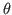 and reduced form coefficient (denoted as  hereafter) are stored in separate directories
named as:
hereafter) are stored in separate directories
named as:
-
<namendo>_vs_<namlagendo>: for the entries of the transition matrix;
-
<namendo>_vs_<namexo>: for entries of the matrix of the shocks.
The following files are stored in each directory (we stick with prior sample but similar conventions are used for MC samples):
-
<mod_file>_prior_<namendo>_vs_<namexo>.fig: histogram and CDF plot of the MC sample of the individual entry
of the shock matrix, in sample and out of sample fit of the ANOVA model;
-
<mod_file>_prior_<namendo>_vs_<namexo>_map_SE.fig: for entries of the shock matrix it shows graphs of the estimated first order ANOVA terms
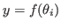 for each deep parameter 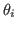;
-
<mod_file>_prior_<namendo>_vs_<namlagendo>.fig: histogram and CDF plot of the MC sample of the individual entry
of the transition matrix, in sample and out of sample fit of the ANOVA model;
-
<mod_file>_prior_<namendo>_vs_<namlagendo>_map_SE.fig: for entries of the transition matrix it shows graphs of the estimated first order ANOVA terms
for each deep parameter ;
-
<mod_file>_prior_<namendo>_vs_<namexo>_map.mat, <mod_file>_<namendo>_vs_<namlagendo>_map.mat: these files store info in the estimation;
When option logtrans_redform is set, the ANOVA estimation is performed using a log-transformation of each y.
The ANOVA mapping is then transformed back onto the original scale, to allow comparability with the baseline estimation.
Graphs for this log-transformed case, are stored in the same folder in files denoted with the _log suffix.
When the option threshold_redform is set, the analysis is performed via Monte Carlo filtering, by displaying parameters that drive the individual entry y inside the range specified in threshold_redform. If no entry is found (or all entries are in the range), the MCF algorithm ignores the range specified in threshold_redform and performs the analysis splitting the MC sample of y into deciles. Setting threshold_redform=[-inf inf] triggers this approach for all y’s.
Results are stored in subdirectories of <mod_file>/gsa/redform_prior named
-
<mod_file>_prior_<namendo>_vs_<namlagendo>_threshold: for the entries of the transition matrix;
-
<mod_file>_prior_<namendo>_vs_<namexo>_threshold: for entries of the matrix of the shocks.
The files saved are named
-
<mod_file>_prior_<namendo>_vs_<namexo>_threshold.fig,<mod_file>_<namendo>_vs_<namlagendo>_threshold.fig: graphical outputs;
-
<mod_file>_prior_<namendo>_vs_<namexo>_threshold.mat,<mod_file>_<namendo>_vs_<namlagendo>_threshold.mat: info on the analysis;
4.20.4.5 RMSE
The RMSE analysis can be performed with different types of sampling options:
- When
pprior=1 and ppost=0, the toolbox analyzes the RMSEs for
the Monte-Carlo sample obtained by sampling parameters from their prior distributions
(or prior ranges): this analysis provides some hints about
what parameter drives the fit of which observed series, prior to the full
estimation;
- When
pprior=0 and ppost=0, the toolbox analyzes the RMSEs for
a multivariate normal Monte-Carlo sample, with covariance matrix based on
the inverse Hessian at the optimum: this analysis is useful when maximum likelihood
estimation is done (i.e. no Bayesian estimation);
- When
ppost=1 the toolbox analyzes the RMSEs for the posterior sample
obtained by Dynare’s Metropolis procedure.
The use of cases 2 and 3 requires an estimation step beforehand. To
facilitate the sensitivity analysis after estimation, the dynare_sensitivity
command also allows you to indicate some options of the estimation
command. These are:
-
datafile
-
nobs
-
first_obs
-
prefilter
-
presample
-
nograph
-
nodisplay
-
graph_format
-
conf_sig
-
loglinear
-
mode_file
Binary files produced my RMSE analysis are:
-
<mod_file>_prior_*.mat: these files store the filtered and smoothed
variables for the prior Monte-Carlo sample, generated when doing RMSE analysis
(pprior=1 and ppost=0);
-
<mode_file>_mc_*.mat: these files store the filtered and smoothed variables
for the multivariate normal Monte-Carlo sample, generated when doing
RMSE analysis (pprior=0 and ppost=0).
Figure files <mod_file>_rmse_*.fig store results for the RMSE analysis.
-
<mod_file>_rmse_prior*.fig: save results for the analysis using prior
Monte-Carlo samples;
-
<mod_file>_rmse_mc*.fig: save results for the analysis using multivariate
normal Monte-Carlo samples;
-
<mod_file>_rmse_post*.fig: save results for the analysis using Metropolis
posterior samples.
The following types of figures are saved (we show prior sample to fix ideas,
but the same conventions are used for multivariate normal and posterior):
-
<mod_file>_rmse_prior_params_*.fig: for each parameter, plots the cdfs
corresponding to the best 10% RMSEs of each observed series (only those cdfs below the significance threshold alpha_rmse);
-
<mod_file>_rmse_prior_<var_obs>_*.fig: if a parameter significantly affects the fit of var_obs, all possible trade-off’s with other observables for same parameter are plotted;
-
<mod_file>_rmse_prior_<var_obs>_map.fig: plots the MCF analysis of parameters significantly driving the fit the observed series var_obs;
-
<mod_file>_rmse_prior_lnlik*.fig: for each observed series, plots
in BLUE the cdf of the log-likelihood corresponding to the best 10%
RMSEs, in RED the cdf of the rest of the sample and in BLACK the
cdf of the full sample; this allows one to see the presence of some
idiosyncratic behavior;
-
<mod_file>_rmse_prior_lnpost*.fig: for each observed series, plots
in BLUE the cdf of the log-posterior corresponding to the best 10% RMSEs,
in RED the cdf of the rest of the sample and in BLACK the cdf of the full
sample; this allows one to see idiosyncratic behavior;
-
<mod_file>_rmse_prior_lnprior*.fig: for each observed series, plots
in BLUE the cdf of the log-prior corresponding to the best 10% RMSEs,
in RED the cdf of the rest of the sample and in BLACK the cdf of the full
sample; this allows one to see idiosyncratic behavior;
-
<mod_file>_rmse_prior_lik.fig: when lik_only=1, this shows
the MCF tests for the filtering of the best 10% log-likelihood values;
-
<mod_file>_rmse_prior_post.fig: when lik_only=1, this shows
the MCF tests for the filtering of the best 10% log-posterior values.
4.20.4.6 Screening Analysis
Screening analysis does not require any additional options with respect to
those listed in Sampling Options. The toolbox performs all the
analyses required and displays results.
The results of the screening analysis with Morris sampling design are stored
in the subfolder <mod_file>/gsa/screen. The data file <mod_file>_prior stores
all the information of the analysis (Morris sample, reduced form coefficients,
etc.).
Screening analysis merely concerns reduced form coefficients. Similar
synthetic bar charts as for the reduced form analysis with Monte-Carlo samples are
saved:
-
<mod_file>_redform_<endo name>_vs_lags_*.fig: shows bar charts
of the elementary effect tests for the ten most important parameters
driving the reduced form coefficients of the selected endogenous variables
(namendo) versus lagged endogenous variables (namlagendo);
-
<mod_file>_redform_<endo name>_vs_shocks_*.fig: shows bar charts
of the elementary effect tests for the ten most important parameters
driving the reduced form coefficients of the selected endogenous variables
(namendo) versus exogenous variables (namexo);
-
<mod_file>_redform_screen.fig: shows bar chart of all elementary
effect tests for each parameter: this allows one to identify parameters that
have a minor effect for any of the reduced form coefficients.
4.20.4.7 Identification Analysis
Setting the option identification=1, an identification analysis based on
theoretical moments is performed. Sensitivity plots are provided that allow
to infer which parameters are most likely to be less identifiable.
Prerequisite for properly running all the identification routines, is the keyword
identification; in the Dynare model file. This keyword triggers
the computation of analytic derivatives of the model with respect to estimated
parameters and shocks. This is required for option morris=2,
which implements Iskrev (2010) identification analysis.
For example, the placing identification; dynare_sensitivity(identification=1, morris=2);
in the Dynare model file trigger identification analysis using analytic derivatives
Iskrev (2010), jointly with the mapping of the acceptable region.
The identification analysis with derivatives can also be triggered by the
commands identification; This does not do the mapping of
acceptable regions for the model and uses the standard random sampler of Dynare.
It completely offsets any use of the sensitivity analysis toolbox.